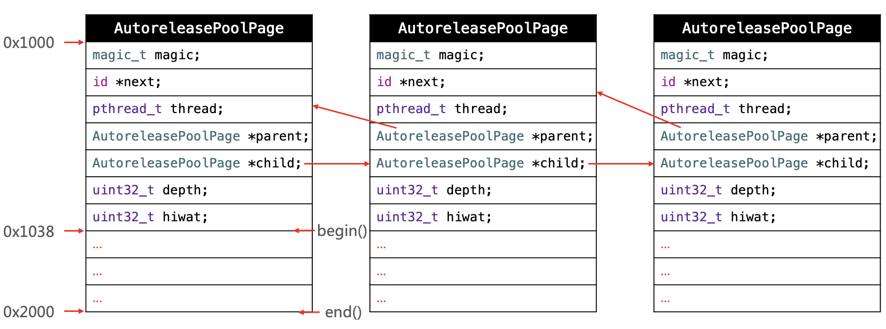

AutoreleasePool
简要说一下 @autoreleasepool 的数据结构？
当使用 @autoreleasepool{} 来使用一个 AutoreleasePool，随后编译器将其改写成下面的样子：
void *context = objc_autoreleasePoolPush();
// {}中的代码
objc_autoreleasePoolPop(context);
objc_autoreleasePoolPush() 和 objc_autoreleasePoolPop() 而这两个函数都是对 AutoreleasePoolPage 的简单封装，所以自动释放机制的核心就在于这个类:
-
AutoreleasePoolPage是一个 C++ 实现的类 , AutoreleasePool 并没有单独的结构，而是由若干个AutoreleasePoolPage以双向链表的形式组合而成（每张链表用parent指针和child指针头尾相接） -
AutoreleasePool 是按线程一一对应的（结构中的
thread指针指向当前线程） -
AutoreleasePoolPage每个对象会开辟4096字节内存（也就是虚拟内存一页的大小），除了上面的实例变量所占空间，剩下的空间全部用来储存autorelease对象的地址 -
每创建一个池子，会在首部创建一个 哨兵 对象(
POOL_BOUNDARY), 作为标记，指向栈顶最新 push 进来的autorelease对象的下一个位置 -
一个
AutoreleasePoolPage的空间被占满时，会新建一个新的AutoreleasePoolPage对象，池子的顶端的next指针连接链表，后来的 autorelease 对象在新的 page 加入 -
调用 pop 方法释放 pool 中的对象时，传入一个
POOL_BOUNDARY的内存地址会从最后一个入栈的对象开始发送release消息，直到遇到这个POOL_BOUNDARY
class AutoreleasePoolPage {
magic_t const magic;
id *next;
pthread_t const thread; // 和线程一一对应
AutoreleasePoolPage * const parent;
AutoreleasePoolPage *child;
uint32_t const depth;
uint32_t hiwat;
}
下图中 ... 部分就是用来存放 autorelease 对象：

@autoreleasepool 的释放时机？
autoreleasepool 在主线程上的释放时机
App 启动后，苹果在主线程 RunLoop 里注册了两个 Observer，其回调都是 _wrapRunLoopWithAutoreleasePoolHandler()。
-
第一个 Observer 监视的事件是 Entry(即将进入Loop)，其回调内会调用
_objc_autoreleasePoolPush()创建自动释放池。其 order 是 -2147483647，优先级最高，保证创建释放池发生在其他所有回调之前。 -
第二个 Observer 监视了两个事件：
- BeforeWaiting(准备进入休眠) 时调用
_objc_autoreleasePoolPop()和_objc_autoreleasePoolPush()释放旧的池并创建新池； - Exit(即将退出Loop) 时调用
_objc_autoreleasePoolPop()来释放自动释放池。这个 Observer 的 order 是 2147483647，优先级最低，保证其释放池子发生在其他所有回调之后。
- BeforeWaiting(准备进入休眠) 时调用
在主线程执行的代码，通常是写在诸如事件回调、Timer回调内的。这些回调会被 RunLoop 创建好的 AutoreleasePool 环绕着，所以不会出现内存泄漏，开发者也不必显示创建 Pool 了。
autoreleasepool 在子线程上的释放时机
首先子线程默认不开启 RunLoop 。但是每一个线程都会维护自己的 Autoreleasepool 对象，所以子线程虽然默认没有开启 RunLoop，但是依然存在AutoreleasePool，在子线程退出的时候会去释放 autorelease 对象。
所以，一般情况下，子线程中即使我们不手动添加自动释放池，也不会产生内存泄漏。
@autoreleasepool 与线程、NSRunLoop 的关系?
RunLoop 和 线程 的关系
-
RunLoop 与线程是一一对应关系，每个线程(包括主线程)都有一个对应的RunLoop对象；其对应关系保存在一个全局的
Dictionary里, 线程是 key，runloop 是 value； -
主线程的 RunLoop 默认由系统自动创建并启动；而其他线程在创建时并没有 RunLoop，若该线程一直不主动获取，就一直不会有 RunLoop；（懒加载）
-
苹果不提供直接创建 RunLoop 的方法；所谓其他线程 Runloop 的创建其实是发生在第一次获取的时候，系统判断当前线程没有 RunLoop 就会自动创建； 当前线程结束时，其对应的 Runloop 也被销毁；
@autoreleasepool 和 RunLoop 的关系
App 启动后，苹果在主线程 RunLoop 里注册了两个 Observer，其回调都是 _wrapRunLoopWithAutoreleasePoolHandler()。
-
第一个 Observer 监视的事件是 Entry(即将进入Loop)，其回调内会调用
_objc_autoreleasePoolPush()创建自动释放池。其 order 是 -2147483647，优先级最高，保证创建释放池发生在其他所有回调之前。 -
第二个 Observer 监视了两个事件：
- BeforeWaiting(准备进入休眠) 时调用
_objc_autoreleasePoolPop()和_objc_autoreleasePoolPush()释放旧的池并创建新池； - Exit(即将退出Loop) 时调用
_objc_autoreleasePoolPop()来释放自动释放池。这个 Observer 的 order 是 2147483647，优先级最低，保证其释放池子发生在其他所有回调之后。
- BeforeWaiting(准备进入休眠) 时调用
在主线程执行的代码，通常是写在诸如事件回调、Timer回调内的。这些回调会被 RunLoop 创建好的 AutoreleasePool 环绕着，所以不会出现内存泄漏，开发者也不必显示创建 Pool 了。
@autoreleasepool 和线程的关系
AutoreleasePool 是按线程一一对应的（结构中的 thread 指针指向当前线程）。新的自动释放池被创建的时候，它们会被添加到栈的顶部，而当池子销毁的时候，会从栈移除。对于当前线程来说，Autoreleased对象会被放到栈顶的自动释放池中。当一个线程线程停止，它会自动释放掉与其关联的所有自动释放池。
什么场景需要手动添加 @autoreleasepool ？
Apple 官方文档Advanced Memory Management Programming Guide列举了三种需要手动添加 @autoreleasepool 的情况
-
编写的不是基于UI框架的程序，例如命令行工具；
-
通过循环方式创建大量临时对象，比如循环创建很多个 image 临时对象
for (int i = 0; i < 1000000; i++) { UIImage *img = [[UIImage alloc] init]; // doing something }img因为离开作用域所以会被加入最近一次创建的自动释放池中，而这个释放池就是主线程上的 RunLoop 管理的；因为for循环在当前线程没有执行完毕。Runloop也就没有完成当前这一次的迭代，所以导致大量对象被延时释放。 值得注意的是使用容器的block版本的枚举器时，内部会自动添加一个AutoreleasePool：[array enumerateObjectsUsingBlock:^(id obj, NSUInteger idx, BOOL *stop) { // 这里被一个局部@autoreleasepool包围着 }]; -
使用非Cocoa程序创建的子线程；
autorelease 对象什么时候释放？
在没有手加 Autorelease Pool的情况下，autorelease 对象是在当前的runloop迭代结束时释放的，而它能够释放的原因是系统在每个runloop迭代中都加入了自动释放池Push和Pop
访问 __weak 修饰的变量，是否已经被注册在了 @autoreleasePool 中？为什么？
答案是肯定的，__weak 修饰的变量属于弱引用，如果没有被注册到 @autoreleasePool 中，创建之后也就会随之销毁，为了延长它的生命周期，必须注册到 @autoreleasePool 中，以延缓释放。
为什么已经有了 ARC ,但还是需要 @autoreleasepool 的存在？
避免内存峰值，及时释放不需要的内存空间。
方法或函数返回一个对象时，会对对象 autorelease 么？为什么？
会 ，为了延长返回对象的生命周期，给其他使用者留足调用的时间。